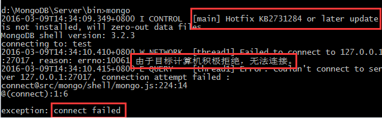
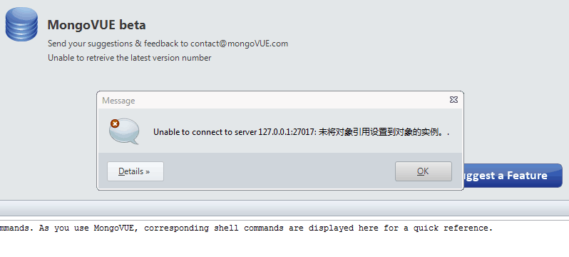

MongoDB配置完成后，并且正常启动连接了，但有时候突然就连接不上了，重启也无效，尽管重启成功！
类似这种：


不要着急，其实解决方法很简单，出现这个问题的原因就是一个配置文件：db目录下的mongod.lock文件，删掉后重启MongoDB再测试试试看~~
原因解析：
mongod.lock文件是mongo服务端启动后在硬盘中创建的一个锁文件，如果你正常退出mongod服务，该文件即使还存在，也不会影响下一次启动mongod服务的。
这个文件还会记录mongod在运行过程中的一些状态，以便在正常重新启动服务时能够获取异常信息提示。
MongoDB安装及配置
1. 运行mongodb-win32-x86_64-2.6.1.msi，下载地址：http://pan.baidu.com/s/1o8PBbtS，实际上是解压程序，将解压后的所有文件放到一个全英文且没有空格的文件夹中，比如D:\MongoDB
2. 在MongoDB文件夹内新建logs文件夹（用于存储日志文件D:\MongoDB\logs），并在此文件夹内新建空文件mongodb.log
3. 在MongoDB文件夹内新建db文件夹（用于存放数据库文件D:\MongoDB\db）
4. 启动MongoDB:
以系统管理员身份运行cmd，切换至D:\MongoDB\bin目录输入mongod.exe --dbpath=d:\mongodb\db。
如看到控制台最后一行类似
Tue Oct 09 11:50:55 [websvr] admin web console watiing for connections on port 27017说明启动成功（MongoDB占用系统27017端口）
5. 测试MongoDB:
以管理员身份新建一个cmd窗口，进入MongoDB的bin目录输入mongo，如出现connecting to:test说明测试通过。
继续测试：
如果出现类似{ "_id" : ObjectId("5073a0a090f93be1455461d2"), "hello" : 1, "baie" : 2 }之类信息，说明测试成功数据已经插入数据库，然后输入exit退出。
6. 注册MongoDB为系统服务（此步骤必须以系统管理员身份运行cmd，否则会报错）
以系统管理员身份运行cmd输入并切换至MongoDB的bin目录运行以下语句
mongod.exe --dbpath=d:\MongoDB\db --logpath=d:\MongoDB\logs\mongodb.log --install --serviceName "MongoDB"
回车
如果控制台出现类似Tue Oct 09 12:05:15 Service can be started from the command line with 'net start MongoDB'这样的语句，说明服务已经注册成功。
7. 在cmd中输入net start MongoDB即可启动MongoDB数据库服务，此时控制台输出Mongo DB 服务已经启动成功，说明系统启动成功。
注意：MongoDB的安装目录需全英文且没有空格
8. MongoDB 安装为Windows服务，且设置为自动启动
以管理员方式运行cmd,输入以下命令
mongod --install --serviceName "MongoDB" --serviceDisplayName "MongoDB" --logpath d:\MongoDB\logs\mongodb.log --logappend --dbpath d:\MongoDB\db --directoryperdb
不提示错误即表示设置成功！
--install ：安装MongoDB服务
--serviceName ：安装Windows服务时使用的服务名
--serviceDisplayName ：在Windows服务管理器中显示的服务名
--logpath ：MongoDB日志输出文件名称。虽说该参数直译是“日志路径”，其实要指定的是一个具体的完整文件名。这里我使用的是C盘根目录下的MongoDB.Log文件。该文件不用事先创建，直接指定就是了。
--dbpath ：指定MongoDB数据存放的路径。这个就是最关键的参数了，不仅该目录要存在，并且最好不要以“\”结尾。
--directoryperdb ：这个参数很好理解，让MongoDB按照数据库的不同，针对每一个数据库都建立一个目录，所谓的“目录每数据库”
9. 使用MongoVUE访问本地数据库
安装并破解MongoVUE之后，点添加，server设置为127.0.0.1，port为27017，连接即可！
最新博文